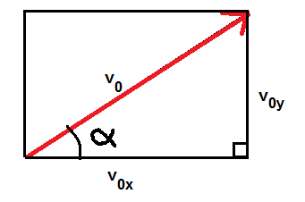
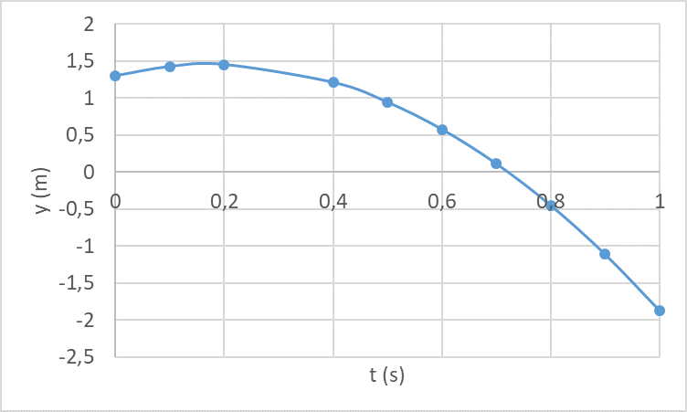
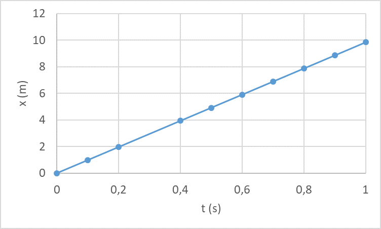

Vino heittoliike
Vino heittoliike¶
Vinossa heittoliikkeessä kappaleella on sekä vaaka- että pystysuuntainen nopeus. Painovoiman takia kappaleella on pystysuuntainen kiihtyvyys. Vaakasuuntaista kiihtyvyyttä ei ole, jos ilmanvastuksen vaikutus on pieni. Vaakasuunnassa nopeus siis pysyy koko ajan samana kuin se oli heittohetkellä, mutta pystysuunnassa nopeus muuttuu.
Aloitetaan vinon heittoliikkeen tarkastelu nopeudesta, joka kappaleella on lähtöhetkellä. Jos tiedetään lähtönopeuden suuruus \(v_0\) ja lähtökulma \(\alpha\), voidaan selvittää alkuhetken pysty- ja vaakasuuntaiset nopeudet. Alkunopeuden pystysuuntaista osaa merkitään \(v_{0y}\) ja vaakasuuntaista osaa \(v_{0x}\). Näitä sanotaan alkunopeuden pysty- ja vaakasuuntaisiksi komponenteiksi.

Suorakulmaisen kolmion trigonometristen funktioiden perusteella \(\sin{\alpha}=\frac{v_{0y}}{v_0}, \cos{\alpha}=\frac{v_{0x}}{v_0}\). Siis lähtönopeuden pysty- ja vaakasuuntaiset osat ovat \(v_{0y}=v_0 \sin{\alpha}\) ja \(v_{0x}=v_0 \cos{\alpha}\). Alkunopeus ei ole vaaka- ja pystysuuntaisten alkunopeuksien summa, vaan se lasketaan Pythagoraan lauseen perusteella seuraavasti:
\(v_0=\sqrt{v_{0x}^2+v_{0y}^2}\)
Esim. Lumipallo heitetään nopeudella 15 m/s ja heittokulma on 20 astetta. Laske alkunopeuden komponentit.
Ratkaisu
Pystysuuntainen alkunopeus on \(v_{0y}=15~\frac{\text{m}}{\text{s}}\cdot \sin{20^{\circ}}=5.13~\frac{\text{m}}{\text{s}}\) ja vaakasuuntainen alkunopeus on \(v_{0x}=15~\frac{\text{m}}{\text{s}}\cdot \cos{20^{\circ}}=14.10~\frac{\text{m}}{\text{s}}\).
Lisäksi todetaan, että \(v_0=\sqrt{(5.13~\text{m/s})^2+(14.10~\text{m/s})^2}=15.00~\text{m/s}\).
Jos tiedetään pysty- ja vaakasuuntaiset lähtönopeudet, saadaan niistä selville myös heittokulma: \(\alpha=\arctan{\frac{v_{0y}}{v_{0x}}}\).
Esim. Pesäpallon lähtönopeuden komponentit ovat vaakasuunnassa 20 m/s ja pystysuunnassa 6 m/s. Laske lähtönopeus ja lähtökulma.
Ratkaisu
Lähtönopeus on \(v_0=\sqrt{(20~\text{m/s})^2+(6~\text{m/s})^2}=20.88~\text{m/s} \approx 75~\text{km/h}\)
ja lähtökulma on \(\alpha=\arctan{\frac{6~\text{m/s}}}{20~\text{m/s}}} \approx 17^{\circ}\).
Vinossa heittoliikkeessä kappaleen liikettä määrittävät seuraavat yhtälöt:
vaakasuuntainen nopeus: \(v_x = v_{0x}\) eli \(v_x = v_0 \cos{\alpha}\)
pystysuuntainen nopeus: \(v_y = v_{0y}-gt\) eli \(v_y =v_0 \sin{\alpha}-gt\)
vaakasuuntainen paikka: \(x=v_x t\) eli \(x= v_0 \cos{\alpha} \cdot t\)
pystysuuntainen paikka: \(y=y_0+v_{0y} t-\frac{1}{2} g t^2\) eli \(y =y_0+v_0 \sin{\alpha} \cdot t-\frac{1}{2} gt^2\)
Vaaka- ja pystysuuntainen nopeus yhdessä muodostavat kokonaisnopeuden \(v\) vastaavalla tavalla kuin lähtönopeuden komponentit, eli siten, että \(v=\sqrt{v_x^2+v_y^2}\).
Seuraavassa esimerkissä tarkastellaan lumipallon liikettä. Alkunopeus lumipallon heitossa on 10 m/s, heittokorkeus 1.30 m ja heittokulma 20 astetta. Kuviin on laskettu lumipallon pysty- ja vaakasuuntaiset sijainnit aikavälillä 0…1 s. Ensimmäisessä kuvassa on lumipallon sijainti pystysuunnassa ja toisessa kuvassa on lumipallon sijainti vaakasuunnassa.


Ylemmästä kuvaajasta näemme, että lumipallo osui maahan suunnilleen hetkellä 0.7 s. Alemmasta kuvaajasta näemme, että se on tuolloin edennyt noin 7 metriä vaakasuunnassa. Lisäksi ylemmästä kuvasta nähdään, että lumipallo on muuttanut suuntaansa ylöspäin nousevasta alaspäin putoavaksi 0.1 ja 0.2 sekunnin välillä. Tällä välillä se on siis noussut korkeimpaan kohtaansa ja lähtenyt sitten putoamaan alaspäin. Miten samoihin tuloksiin päästäisiin laskemalla?
Periaate on sama kuin aiemminkin: suureista voidaan selvittää yhtä monta tuntematonta kuin yhtälöitä on käytettävissä. Vinossa heittoliikkeessä yhtälöitä on jopa neljä kappaletta: nopeus- ja paikkayhtälöt sekä pysty- että vaakasuunnassa. Usein pärjätään pelkillä paikkayhtälöillä.
Kynällä ja paperilla laskettaessa voitaisiin toimia seuraavasti: Jos tiedetään lähtönopeus ja lähtökulma, niin lentoaika saadaan sijoittamalla pystysuunnan paikkayhtälöön \(y=0\) m (etsitään siis hetkeä, jolloin heitetty esine on maan pinnalla). Kun lentoaika on selvillä, saadaan lentomatka vaakasuunnan paikkayhtälöstä.
Esim. Rannikkotykistön ammunnassa eräs tykinammus lähtee nopeudella 600 m/s ja 25 asteen lähtökulmassa 2 m maanpinnan yläpuolelta. Mihin asti ammus lentää?
Ratkaisu
Pystysuunnan paikkayhtälöstä voidaan ensin ratkaista aika, joka ammuksella kestää saapua maahan:
\(0~\text{m}=2~\text{m}+600~\frac{\text{m}}{\text{s}} \cdot \sin{25^{\circ}} \cdot t - \frac{1}{2}\cdot 9.81~\frac{\text{m}}{\text{s}^2}\cdot t^2\)
Yhtälöstä ratkeaa kaksi mahdollista hetkeä \(t \approx -0.008\) s ja \(t\approx 51.7\) s, joista valitaan jälkimmäinen. Vaakasuunnassa tuossa ajassa edetty matka oli \(x=600~\frac{\text{m}}{\text{s}}\cdot \cos{25^{\circ}} \cdot 51.7~\text{s} \approx 27.7~\text{km}\).
Yhtälöt voi syöttää WolframAlphaan kerrallakin:
solve 0=2+600*sin(25)*t-0.5*9.81*t^2, x=600*cos(25)*t
Kun kappale on lentoratansa korkeimmassa kohdassa, sen pystysuuntainen nopeus on hetkellisesti 0 m/s. Näinhän todettiin jo pystysuuntaisen kiihtyvän liikkeen yhteydessä. Vinossa heittoliikkeessä vain erona on, että pystysuuntaiseksi nopeus pitää ilmaista heittokulman \(\alpha\) avulla. Tällöin lakikorkeuden ajanhetkeksi saadaan nopeusyhtälöstä ratkaisemalla:
\(0=v_{0y}-gt\)
\(0=v_0 \sin{\alpha} -gt\)
\(t=\frac{v_0 \sin{\alpha}}{g}\)
Lakikorkeus eli sijainti tuolla hetkellä saadaan sijoittamalla kyseinen ajanhetki pystysuunnan paikkayhtälöön. Vaihtoehtoisesti voidaan jälleen kirjoittaa nopeus- ja paikkayhtälö kerralla WolframAlphaan.
Esim. Rannikkotykistön ammunnassa eräs tykinammus lähtee nopeudella 600 m/s ja 25 asteen lähtökulmassa 2 m maanpinnan yläpuolelta. Laske ammuksen lakikorkeus.
Ratkaisu
Lakikorkeus saavutetaan hetkellä \(t=\frac{v_0 \sin{\alpha}}{g}\) eli
\(t=\frac{600~\frac{\text{m}}{\text{s}}\cdot \sin{25^{\circ}}}{9.81~\frac{\text{m}}{\text{s}^2}}=25.8~\text{s}\).
Korkeus hetkellä \(t=25.8\) s on \(y=2~\text{m}+600~\frac{\text{m}}{\text{s}}\cdot \sin{25^{\circ}}\cdot 25.8~\text{s}-\frac{1}{2}\cdot 9.81~\frac{\text{m}}{\text{s}^2}\cdot (25.8~\text{s})^2 \approx 3280~\text{m}\).
WolframAlphalla ratkaisu saataisiin seuraavasti:
solve 0=600*sin(25)-9.81*t, y=2+600*sin(25)*t-0.5*9.81*t^2